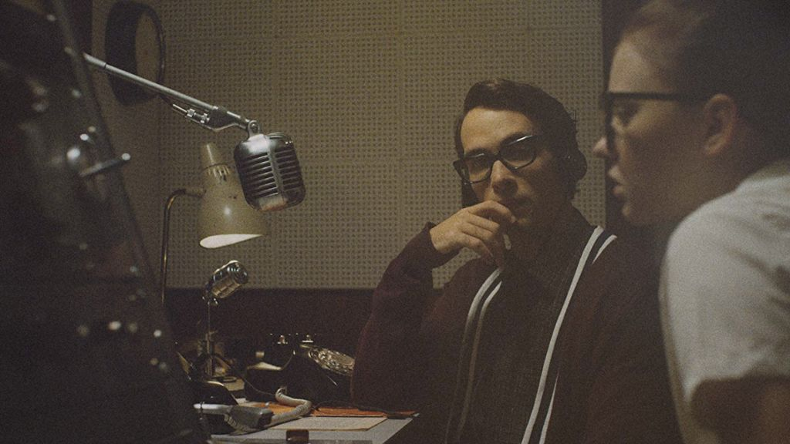

Whiskey Tango Foxtrot: Art on the Edge

In the heart of this cinematic frenzy, a committed film freak, yearning for the obscure, delved into the twisted abyss of underground movies. These celluloid gems, lurking in the shadows, whispered promises of uncharted territories far from the glitzy dazzle of mainstream Hollywood. Picture this: a new adventure through the celluloid underbelly, where reality bends, and sanity teeters on the edge. Join me, compadres, as I ride the wave of my cinematic odyssey, a tale soaked in the bizarre, having danced with five underground flicks that tattooed my film-loving soul.
"The Vast of Night" (2019)
The journey kicks off with "The Vast of Night," a trip to the sci-fi hinterlands directed by Andrew Patterson. We're talking about 1950s New Mexico, switchboard operators, and radio DJs stumbling upon strange occurrences that defy the laws of physics. Patterson's storytelling mojo and the nostalgic vibe hit me like a shot of pure adrenaline. It's like stepping into a time capsule, riding the UFO of indie brilliance – a far cry from the glitzy Hollywood spaceship.
"Good Time" (2017)
Now, brace yourselves for "Good Time," a rollercoaster crime thriller careening through the neon-lit streets of New York City. Directed by the Safdie Brothers, this one's a gritty joyride, with Robert Pattinson steering the chaos. It's like being strapped to a rocket fueled by raw intensity and unpredictable turns. Forget the predictable Hollywood heists; this is a high-octane plunge into the real underworld, where the beats are unpredictable, and the grit is as real as the asphalt.
"The Witch" (2015)
Venturing into the dark, I stumbled upon "The Witch," a period horror piece directed by Robert Eggers. We're talking 1630s New England, Puritans, and a descent into the abyss. Eggers' meticulous eye for detail and an unsettling atmosphere take you on a journey where the witches are real, and the dread is palpable. Forget the cookie-cutter horror tropes; "The Witch" is a plunge into historical horror that'll leave you questioning the very fabric of your reality.
"Exit Through the Gift Shop" (2010)
Shifting gears into the world of art and anarchy, we find ourselves immersed in "Exit Through the Gift Shop," a documentary guided by the elusive street artist Banksy. It's a mind-bending ride through the absurdity of the art world, where Thierry Guetta's transformation into an accidental artist is the stuff of guerrilla dreams. Banksy's commentary on the commodification of art hits you like a surreal acid trip, a wild journey into a world where the boundaries between reality and illusion blur.
"Primer" (2004)
The curtain falls on my cinematic crusade with "Primer," a head-spinning time travel puzzle directed by Shane Carruth. This indie sci-fi mind-bender is a labyrinth of causality and paradoxes that'll make your head spin faster than a Vegas slot machine. Carruth's brilliance lies in weaving a narrative so complex it's like trying to decode hieroglyphics under the influence of mind-altering substances. This ain't your run-of-the-mill blockbuster; it's a cerebral trip into the unknown.
So there you have it, my fellow thrill-seekers. The underground scene is a wild ride, a kaleidoscopic journey through the fringes of cinema that'll shake you to the core. In this realm of madness, where reality is subjective, and the mainstream is a distant memory, the underground films stand as monuments to the untamed, the bizarre, and the unexplored. Embrace the chaos, my friends, and let the celluloid madness consume you.
This dispatch was last updated on January 22, 2024